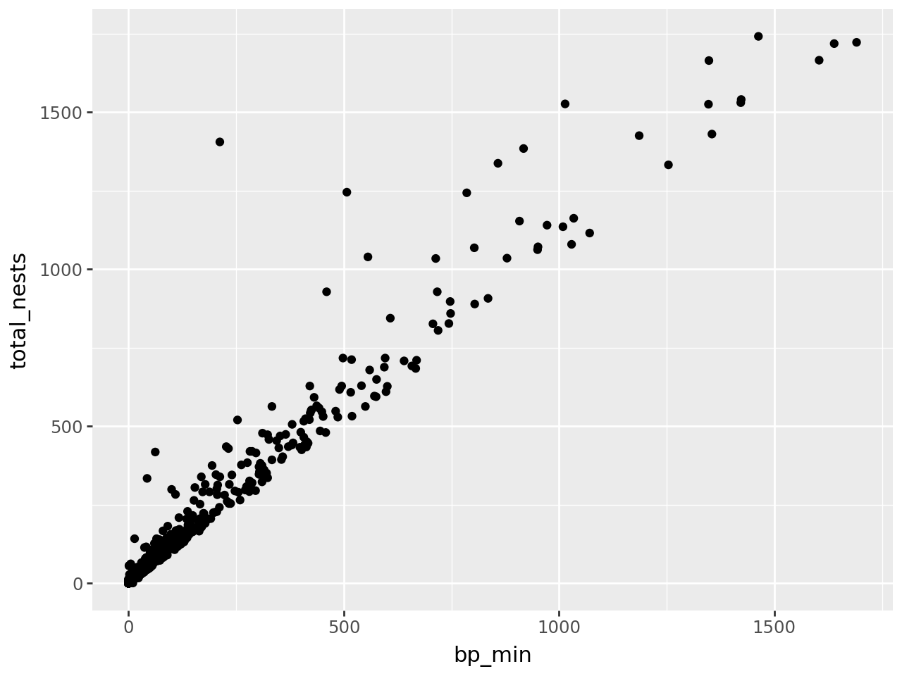
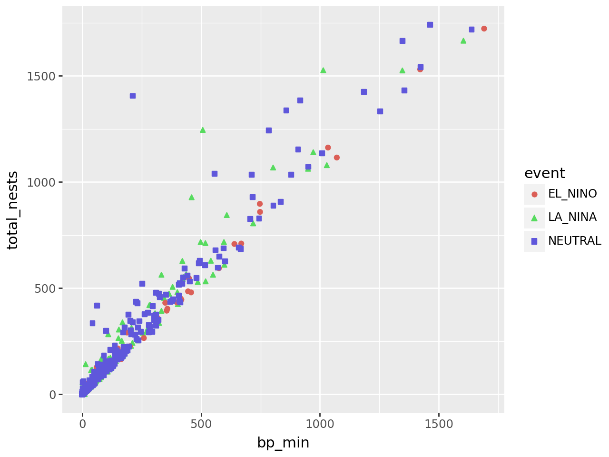
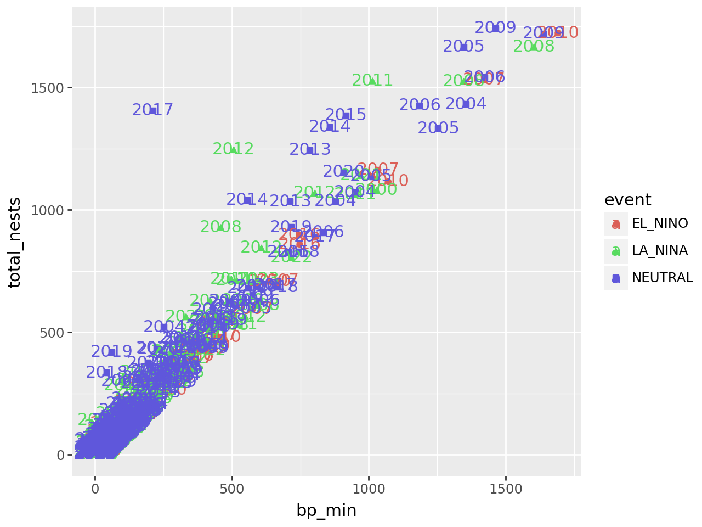
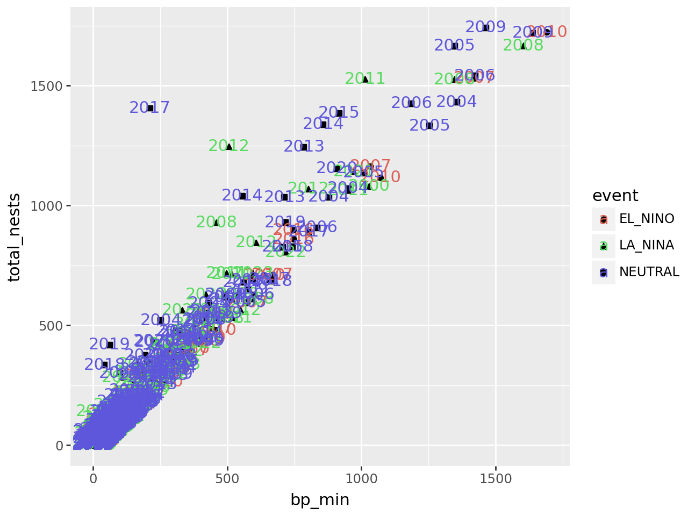
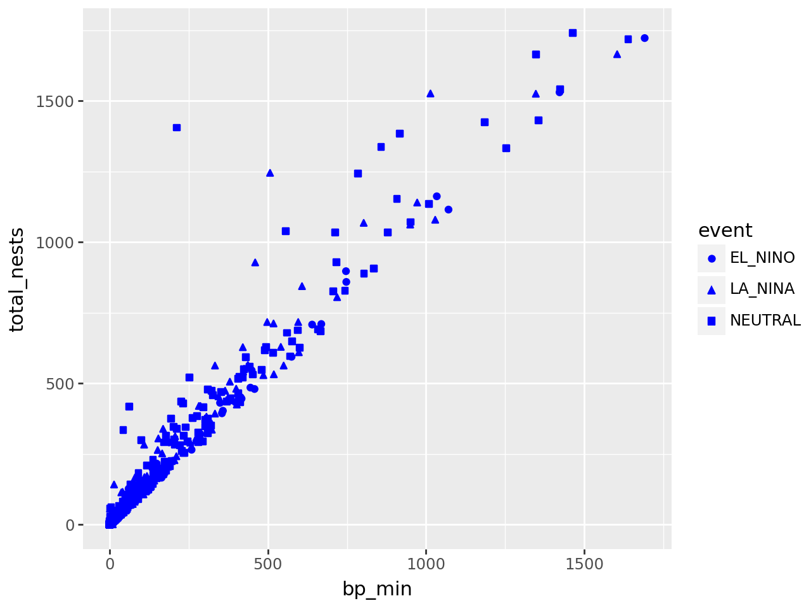
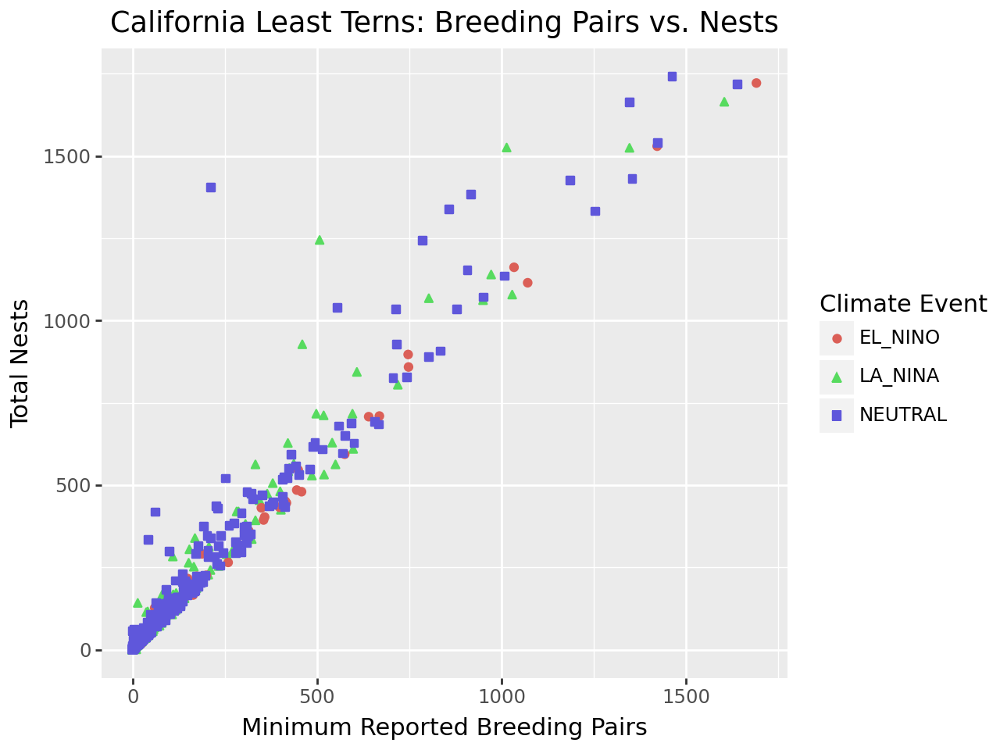

3. Exploring Data#
Learning Objectives
After this lesson, you should be able to:
List and describe popular data visualization packages
Prepare data for visualization
Describe the grammar of graphics
Use the grammar of graphics to produce a plot
Identify where to go to learn more about making effective visualizations
Compute aggregates of data
Split data into groups and compute aggregates on each
Now that you have a solid foundation in the basic functions and data structures of Python, you can move on to using it for data analysis. In this chapter, you’ll learn how to efficiently explore and summarize with visualizations and statistics.
3.1. Visualization Packages#

Fig. 3.1 Image from Jake VanderPlas. See here for a version with links to all of the packages!#
A visualization is one of the most effective ways to display and summarize data, and there are many ways to create visualizations in Python. In fact, so many visualization packages are available that there’s even a website dedicated to helping people decide which to use. Some popular packages for creating static visualizations are:
Matplotlib is the foundation for most other visualization packages. Matplotlib is low-level, meaning it’s flexible but even simple plots may take 5 lines of code or more. It’s good to know a little bit about Matplotlib, but it probably shouldn’t be your primary visualization package. Familiarity with MATLAB makes it easier to learn Matplotlib.
Plotnine is a copy of the popular R package ggplot2. The package uses the grammar of graphics, a convenient way to describe visualizations in terms of layers. Familiarity with ggplot2 or Julia’s Gadfly.jl package makes it easier to learn Plotnine (and vice-versa).
Seaborn is designed specifically for making statistical plots. It’s well-documented and stable.
Polars provides built-in plotting functions based on Altair, which can be convenient but are more limited than what you’ll find in dedicated visualization packages.
We’ll focus on Plotnine, so that the visualization skills you learn here will also be relevant if you end up using R or Julia. Plotnine has detailed documentation. It’s also useful to look at the ggplot2 documentation and cheatsheet.
3.2. The Grammar of Graphics#
Recall that plotnine is a clone of ggplot2. The “gg” in ggplot2 stands for grammar of graphics. The idea of a grammar of graphics is that visualizations can be built up in layers. The three layers every plot must have are:
Data: one or more data sets
Geometry: marks to display data, such as points or lines
Aesthetics: a specification of which features to display with geometry
There are also several optional layers. Here are a few:
Layer |
Description |
|---|---|
scales |
Title, label, and axis value settings |
facets |
Side-by-side plots |
guides |
Axis and legend position settings |
annotations |
Shapes that are not mapped to data |
coordinates |
Coordinate systems (Cartesian, logarithmic, polar) |
Let’s visualize the California least terns data set from Hello, Data! to see how the grammar of graphics works in practice. But what kind of plot should we make? It depends on what we want to know about the data set. Suppose we want to understand the relationship between the number of breeding pairs and the total number of nests at each site, and whether this relationship is affected by climate events. One way to show the relationship between two numerical features like these is to make a scatter plot.
3.2.1. Importing Plotnine#
Before we can make the plot, we need to import Plotnine.
Importing Modules explained how to import an entire module with the
import keyword. Python also provides a from keyword to import specific
objects from within a module, so that you can access them without the module
name as a prefix.
As an example, Plotnine’s ggplot function is the starting point for making
plots. You can import the function with from like this:
from plotnine import ggplot
Then you can use the function as ggplot rather than plotnine.ggplot.
You can also use the from keyword to import all objects in a module with the
wildcard character *. Plotnine is designed to be imported this way:
from plotnine import *
Caution
Aside from Plotnine, you generally shouldn’t import all objects from a module, because doing so:
Makes it harder to understand the code: an object could be defined locally or in the module.
Can introduce bugs: objects from the module will overwrite objects in your code that have the same name.
One recommendation is that it’s fine to use from to import classes (with
TitleCase names), but you should avoid using it to import functions (with
snake_case names). The justification is that classes are more likely than
functions to have distinct, memorable names.
If you prefer not to use from to import functions from Plotnine, you can use
the following convention instead:
import plotnine as p9
Plotting in Jupyter
Jupyter notebooks can display most static visualizations and some interactive visualizations. For visualization packages that depend on Matplotlib, it’s a good idea to set the default size of the plots:
import matplotlib.pyplot as plt
plt.rcParams["figure.figsize"] = [10, 8]
You can increase the numbers to make plots larger, or decrease them to make plots smaller. Plotnine provides another way to set the plot size through its theme layer.
In older versions of Jupyter and IPython, it was also necessary to run the
special IPython command %matplotlib inline to set up a notebook for plotting.
This is no longer necessary in modern versions, but you may still see people
use or mention it online. You can read more about this change in this
StackOverflow question.
3.2.2. Layer 1: Data#
The data layer determines the data set(s) used to make the plot.
Plotnine is designed to work with tidy data, which means:
Each feature has its own column.
Each observation has its own row.
Each value has its own cell.
These rules ensure data are easy to read visually and access with indexing. The least terns data set satisfies all of these rules.
See also
All of the data sets we use in this reader are tidy. To learn how to tidy an untidy data set, see the Untidy & Relational Data chapter of DataLab’s Intermediate Python workshop reader.
To set up the data layer, call the ggplot function on a data frame:
{kind=link}
This returns a blank plot. We still need to add a few more layers.
3.2.3. Layer 2: Geometry#
The geometry layer determines the shape or appearance of the visual elements of the plot. In other words, the geometry layer determines what kind of plot to make: one with points, lines, boxes, or something else.
There are many different geometries available in Plotnine. The package provides
a function for each geometry, always prefixed with geom_.
To add a geometry layer to the plot, choose the geom_ function you want and
add it to the plot with the + operator. We’ll use geom_point, which makes a
scatter plot (a plot with points):
ggplot(terns) + geom_point()
---------------------------------------------------------------------------
PlotnineError Traceback (most recent call last)
File ~/mill/datalab/teaching/python_basics/.pixi/envs/default/lib/python3.13/site-packages/IPython/core/formatters.py:984, in IPythonDisplayFormatter.__call__(self, obj)
982 method = get_real_method(obj, self.print_method)
983 if method is not None:
--> 984 method()
985 return True
File ~/mill/datalab/teaching/python_basics/.pixi/envs/default/lib/python3.13/site-packages/plotnine/ggplot.py:141, in ggplot._ipython_display_(self)
134 def _ipython_display_(self):
135 """
136 Display plot in the output of the cell
137
138 This method will always be called when a ggplot object is the
139 last in the cell.
140 """
--> 141 self._display()
File ~/mill/datalab/teaching/python_basics/.pixi/envs/default/lib/python3.13/site-packages/plotnine/ggplot.py:181, in ggplot._display(self)
179 figure_size_px = self.theme._figure_size_px
180 buf = BytesIO()
--> 181 self.save(buf, format=save_format, verbose=False)
182 display_func = get_display_function(format, figure_size_px)
183 display_func(buf.getvalue())
File ~/mill/datalab/teaching/python_basics/.pixi/envs/default/lib/python3.13/site-packages/plotnine/ggplot.py:673, in ggplot.save(self, filename, format, path, width, height, units, dpi, limitsize, verbose, **kwargs)
624 def save(
625 self,
626 filename: Optional[str | Path | BytesIO] = None,
(...) 635 **kwargs: Any,
636 ):
637 """
638 Save a ggplot object as an image file
639
(...) 671 Additional arguments to pass to matplotlib `savefig()`.
672 """
--> 673 sv = self.save_helper(
674 filename=filename,
675 format=format,
676 path=path,
677 width=width,
678 height=height,
679 units=units,
680 dpi=dpi,
681 limitsize=limitsize,
682 verbose=verbose,
683 **kwargs,
684 )
686 with plot_context(self).rc_context:
687 sv.figure.savefig(**sv.kwargs)
File ~/mill/datalab/teaching/python_basics/.pixi/envs/default/lib/python3.13/site-packages/plotnine/ggplot.py:621, in ggplot.save_helper(self, filename, format, path, width, height, units, dpi, limitsize, verbose, **kwargs)
618 if dpi is not None:
619 self.theme = self.theme + theme(dpi=dpi)
--> 621 figure = self.draw(show=False)
622 return mpl_save_view(figure, fig_kwargs)
File ~/mill/datalab/teaching/python_basics/.pixi/envs/default/lib/python3.13/site-packages/plotnine/ggplot.py:278, in ggplot.draw(self, show)
276 self = deepcopy(self)
277 with plot_context(self, show=show):
--> 278 self._build()
280 # setup
281 self.figure, self.axs = self.facet.setup(self)
File ~/mill/datalab/teaching/python_basics/.pixi/envs/default/lib/python3.13/site-packages/plotnine/ggplot.py:387, in ggplot._build(self)
383 layers.map_statistic(self)
385 # Prepare data in geoms
386 # e.g. from y and width to ymin and ymax
--> 387 layers.setup_data()
389 # Apply position adjustments
390 layers.compute_position(layout)
File ~/mill/datalab/teaching/python_basics/.pixi/envs/default/lib/python3.13/site-packages/plotnine/layer.py:458, in Layers.setup_data(self)
456 def setup_data(self):
457 for l in self:
--> 458 l.setup_data()
File ~/mill/datalab/teaching/python_basics/.pixi/envs/default/lib/python3.13/site-packages/plotnine/layer.py:325, in layer.setup_data(self)
321 return
323 data = self.geom.setup_data(data)
--> 325 check_required_aesthetics(
326 self.geom.REQUIRED_AES,
327 set(data.columns) | set(self.geom.aes_params),
328 self.geom.__class__.__name__,
329 )
331 self.data = data
File ~/mill/datalab/teaching/python_basics/.pixi/envs/default/lib/python3.13/site-packages/plotnine/_utils/__init__.py:402, in check_required_aesthetics(required, present, name)
400 if missing_aes:
401 msg = "{} requires the following missing aesthetics: {}"
--> 402 raise PlotnineError(msg.format(name, ", ".join(missing_aes)))
PlotnineError: 'geom_point requires the following missing aesthetics: y, x'
<plotnine.ggplot.ggplot at 0x709cd827d010>
This returns an error message that we’re missing aesthetics x and y. We’ll
learn more about aesthetics in the next section, but this error message is
especially helpful: it tells us exactly what we’re missing. When you use a
geometry you’re unfamiliar with, it can be helpful to run the code for just the
data and geometry layer like this, to see exactly which aesthetics need to be
set.
As we’ll see later, it’s possible to add multiple geometries to a plot.
3.2.4. Layer 3: Aesthetics#
The aesthetics layer determines the relationship between the data and the geometry. Use the aesthetic layer to map features in the data to aesthetics (visual elements) of the geometry.
The aes function creates an aesthetic layer. The syntax is:
aes(AESTHETIC = FEATURE, ...)
The names of the aesthetics depend on the geometry, but some common ones are
x, y, color, fill, shape, and size. There is more information about
and examples of aesthetic names in the documentation.
For the scatter plot of breeding pairs against total nests, we’ll put bp_min
on the x-axis and total_nests on the y-axis. Below, we set both of these
aesthetics. We also enclose all of the code for the plot in parentheses () so
that we can put the code for each layer on a separate line, which makes the
layers easier to distinguish:
(
ggplot(terns) +
aes(x = "bp_min", y = "total_nests") +
geom_point()
)
/home/nick/mill/datalab/teaching/python_basics/.pixi/envs/default/lib/python3.13/site-packages/plotnine/layer.py:364: PlotnineWarning: geom_point : Removed 8 rows containing missing values.
{kind=link}

At this point, we’ve supplied all three layers necessary to make a plot: data, geometry, and aesthetics. The plot shows what looks like a linear relationship between number of breeding pairs and total nests. To refine the plot, you can add more layers and/or set parameters on the layers you have.
Tip
Python ignores line breaks inside of parentheses (), so you can enclose
lengthy expressions in parentheses and format them neatly.
Let’s add another aesthetic to the plot: we’ll make the color and shape of each
point correspond to event, the climate event for each observation:
(
ggplot(terns) +
aes(x = "bp_min", y = "total_nests", color = "event", shape = "event") +
geom_point()
)
/home/nick/mill/datalab/teaching/python_basics/.pixi/envs/default/lib/python3.13/site-packages/plotnine/layer.py:364: PlotnineWarning: geom_point : Removed 8 rows containing missing values.
{kind=link}

Using color and shape for the same feature is redundant, but ensures that the plot is accessible to colorblind people.
3.2.4.1. Additional Geometries#
Each observation in the least terns data corresponds to a specific year and
site. What if we label the points with their years? You can add text labels to
a plot with geom_text. The required aesthetic for this geometry is label:
(
ggplot(terns) +
aes(
x = "bp_min", y = "total_nests",
color = "event", shape = "event",
label = "year"
) +
geom_point() +
geom_text()
)
/home/nick/mill/datalab/teaching/python_basics/.pixi/envs/default/lib/python3.13/site-packages/plotnine/layer.py:364: PlotnineWarning: geom_point : Removed 8 rows containing missing values.
/home/nick/mill/datalab/teaching/python_basics/.pixi/envs/default/lib/python3.13/site-packages/plotnine/layer.py:364: PlotnineWarning: geom_text : Removed 8 rows containing missing values.
{kind=link}

The labels make the plot more difficult to read and probably would even if we made them smaller, because there are so many points on the plot. Making a high-quality visualization is typically a process of drafting and revising, similar to writing a high-quality essay. In this example, adding year labels to the plot doesn’t work well, so we’ll backtrack and leave them off of the plot. If accounting for year was critical to our research question, we could do it in other ways, such as by making separate plots for each year.
3.2.4.2. Per-geometry Aesthetics#
Before we remove the labels, let’s use them to demonstrate an important point
about using multiple geometry and aesthetic layers: when you add an aesthetic
layer to a plot, it applies to the entire plot. You can also set an aesthetic
layer for an individual geometry by passing the layer as the first argument in
the geom_ function. Here’s the same plot as above, but with the color
aesthetic only set for the labels:
(
ggplot(terns) +
aes(
x = "bp_min", y = "total_nests",
shape = "event",
label = "year"
) +
geom_point() +
geom_text(aes(color = "event"))
)
/home/nick/mill/datalab/teaching/python_basics/.pixi/envs/default/lib/python3.13/site-packages/plotnine/layer.py:364: PlotnineWarning: geom_point : Removed 8 rows containing missing values.
/home/nick/mill/datalab/teaching/python_basics/.pixi/envs/default/lib/python3.13/site-packages/plotnine/layer.py:364: PlotnineWarning: geom_text : Removed 8 rows containing missing values.
{kind=link}

Notice that the points are no longer color-coded. Where you put aesthetic layers matters.
3.2.4.3. Constant Aesthetics#
If you want to set an aesthetic to a constant value, rather than one that’s data-dependent, do so in the geometry layer rather than the aesthetic layer.
For instance, suppose we want to make all of the points blue and use only point shape to indicate climate events:
(
ggplot(terns) +
aes(
x = "bp_min", y = "total_nests",
shape = "event"
) +
geom_point(color = "blue")
)
/home/nick/mill/datalab/teaching/python_basics/.pixi/envs/default/lib/python3.13/site-packages/plotnine/layer.py:364: PlotnineWarning: geom_point : Removed 8 rows containing missing values.
{kind=link}

If you set an aesthetic to a constant value in an aesthetic layer, the results won’t be what you expect:
(
ggplot(terns) +
aes(
x = "bp_min", y = "total_nests",
color = "blue", shape = "event",
label = "year"
) +
geom_point() +
geom_text()
)
---------------------------------------------------------------------------
NameError Traceback (most recent call last)
File ~/mill/datalab/teaching/python_basics/.pixi/envs/default/lib/python3.13/site-packages/plotnine/mapping/evaluation.py:223, in evaluate(aesthetics, data, env)
222 try:
--> 223 new_val = env.eval(col, inner_namespace=data)
224 except Exception as e:
File ~/mill/datalab/teaching/python_basics/.pixi/envs/default/lib/python3.13/site-packages/plotnine/mapping/_env.py:69, in Environment.eval(self, expr, inner_namespace)
68 code = _compile_eval(expr)
---> 69 return eval(
70 code, {}, StackedLookup([inner_namespace] + self.namespaces)
71 )
File <string-expression>:1
NameError: name 'blue' is not defined
The above exception was the direct cause of the following exception:
PlotnineError Traceback (most recent call last)
File ~/mill/datalab/teaching/python_basics/.pixi/envs/default/lib/python3.13/site-packages/IPython/core/formatters.py:984, in IPythonDisplayFormatter.__call__(self, obj)
982 method = get_real_method(obj, self.print_method)
983 if method is not None:
--> 984 method()
985 return True
File ~/mill/datalab/teaching/python_basics/.pixi/envs/default/lib/python3.13/site-packages/plotnine/ggplot.py:141, in ggplot._ipython_display_(self)
134 def _ipython_display_(self):
135 """
136 Display plot in the output of the cell
137
138 This method will always be called when a ggplot object is the
139 last in the cell.
140 """
--> 141 self._display()
File ~/mill/datalab/teaching/python_basics/.pixi/envs/default/lib/python3.13/site-packages/plotnine/ggplot.py:181, in ggplot._display(self)
179 figure_size_px = self.theme._figure_size_px
180 buf = BytesIO()
--> 181 self.save(buf, format=save_format, verbose=False)
182 display_func = get_display_function(format, figure_size_px)
183 display_func(buf.getvalue())
File ~/mill/datalab/teaching/python_basics/.pixi/envs/default/lib/python3.13/site-packages/plotnine/ggplot.py:673, in ggplot.save(self, filename, format, path, width, height, units, dpi, limitsize, verbose, **kwargs)
624 def save(
625 self,
626 filename: Optional[str | Path | BytesIO] = None,
(...) 635 **kwargs: Any,
636 ):
637 """
638 Save a ggplot object as an image file
639
(...) 671 Additional arguments to pass to matplotlib `savefig()`.
672 """
--> 673 sv = self.save_helper(
674 filename=filename,
675 format=format,
676 path=path,
677 width=width,
678 height=height,
679 units=units,
680 dpi=dpi,
681 limitsize=limitsize,
682 verbose=verbose,
683 **kwargs,
684 )
686 with plot_context(self).rc_context:
687 sv.figure.savefig(**sv.kwargs)
File ~/mill/datalab/teaching/python_basics/.pixi/envs/default/lib/python3.13/site-packages/plotnine/ggplot.py:621, in ggplot.save_helper(self, filename, format, path, width, height, units, dpi, limitsize, verbose, **kwargs)
618 if dpi is not None:
619 self.theme = self.theme + theme(dpi=dpi)
--> 621 figure = self.draw(show=False)
622 return mpl_save_view(figure, fig_kwargs)
File ~/mill/datalab/teaching/python_basics/.pixi/envs/default/lib/python3.13/site-packages/plotnine/ggplot.py:278, in ggplot.draw(self, show)
276 self = deepcopy(self)
277 with plot_context(self, show=show):
--> 278 self._build()
280 # setup
281 self.figure, self.axs = self.facet.setup(self)
File ~/mill/datalab/teaching/python_basics/.pixi/envs/default/lib/python3.13/site-packages/plotnine/ggplot.py:368, in ggplot._build(self)
364 layout.setup(layers, self)
366 # Compute aesthetics to produce data with generalised
367 # variable names
--> 368 layers.compute_aesthetics(self)
370 # Transform data using all scales
371 layers.transform(scales)
File ~/mill/datalab/teaching/python_basics/.pixi/envs/default/lib/python3.13/site-packages/plotnine/layer.py:468, in Layers.compute_aesthetics(self, plot)
466 def compute_aesthetics(self, plot: ggplot):
467 for l in self:
--> 468 l.compute_aesthetics(plot)
File ~/mill/datalab/teaching/python_basics/.pixi/envs/default/lib/python3.13/site-packages/plotnine/layer.py:260, in layer.compute_aesthetics(self, plot)
253 def compute_aesthetics(self, plot: ggplot):
254 """
255 Return a dataframe where the columns match the aesthetic mappings
256
257 Transformations like 'factor(cyl)' and other
258 expression evaluation are made in here
259 """
--> 260 evaled = evaluate(self.mapping._starting, self.data, plot.environment)
261 evaled_aes = aes(**{str(col): col for col in evaled})
262 plot.scales.add_defaults(evaled, evaled_aes)
File ~/mill/datalab/teaching/python_basics/.pixi/envs/default/lib/python3.13/site-packages/plotnine/mapping/evaluation.py:226, in evaluate(aesthetics, data, env)
224 except Exception as e:
225 msg = _TPL_EVAL_FAIL.format(ae, col, str(e))
--> 226 raise PlotnineError(msg) from e
228 try:
229 evaled[ae] = new_val
PlotnineError: "Could not evaluate the 'color' mapping: 'blue' (original error: name 'blue' is not defined)"
<plotnine.ggplot.ggplot at 0x709cc99e1160>
3.2.5. Layer 4: Scales#
The scales layer controls the title, axis labels, and axis scales of the
plot. Most of the functions in the scales layer are prefixed with scale_, but
not all of them.
The labs function is especially important, because it’s used to set the title
and axis labels. Visualizations should generally have a title and axis labels,
to aid the viewer:
(
ggplot(terns) +
aes(
x = "bp_min", y = "total_nests",
color = "event", shape = "event"
) +
geom_point() +
labs(
x = "Minimum Reported Breeding Pairs",
y = "Total Nests",
color = "Climate Event", shape = "Climate Event",
title = "California Least Terns: Breeding Pairs vs. Nests"
)
)
/home/nick/mill/datalab/teaching/python_basics/.pixi/envs/default/lib/python3.13/site-packages/plotnine/layer.py:364: PlotnineWarning: geom_point : Removed 8 rows containing missing values.
{kind=link}

Notice that to set the title for a legend with labs, you can set the
parameters of the same names as the corresponding aesthetics. While our plot is
still far from perfect—some of the points are hard to see because of how many
there are—it’s now good enough to provide some insight into the relationship
between number of breeding pairs and nests.
3.2.6. Saving Plots#
If you assign a plot to a variable, you can use the save method or the
ggsave function to save that plot to a file:
plot = (
ggplot(terns) +
aes(
x = "bp_min", y = "total_nests",
color = "event", shape = "event"
) +
geom_point() +
labs(
x = "Minimum Reported Breeding Pairs",
y = "Total Nests",
color = "Climate Event", shape = "Climate Event",
title = "California Least Terns: Breeding Pairs vs. Nests"
)
)
ggsave(plot, "myplot.png")
The file format is selected automatically based on the extension. Common formats include PNG, TIFF, SVG, and PDF.
Tip
PNG and SVG are good choices for sharing visualizations online, while TIFF and PDF are good choices for print. Many journals require that visualizations be in TIFF format.
3.2.7. Example: Bar Plot#
Suppose we want to visualize how many fledglings there are each year, further broken down by region. A bar plot is one appropriate way to represent this visually.
The geometry for a bar plot is geom_bar. Since bar plots are mainly used to
display frequencies, by default the geom_bar function counts the number of
observations in each category on the x-axis and displays these counts on the
y-axis. You can make geom_bar display values from a column on the y-axis by
setting the weight aesthetic:
(
ggplot(terns) +
aes(x = "year", weight = "fl_min", fill = "region_3") +
geom_bar()
)
{kind=link}
Setting the Statistics Layer
Every geometry layer has a corresponding statistics layer, which transforms feature values into quantities to plot. For many geometries, the default statistics layer is the only one that makes sense.
Bar plots are an exception. The default statistics layer is stat_count, which
counts observations. If you already have counts (or just want to display some
quantities as bars), you need stat_identity (or the weight aesthetic
described above). Here’s one way to change the statistics layer:
(
ggplot(terns) +
aes(x = "year", y = "fl_min", fill = "region_3") +
geom_bar(stat = "identity")
)
This produces the same plot as setting weight and using the default
statistics layer stat_count.
The plot reveals that there are a few extraneous categories in the region_3
column: ARIZONA, KINGS, and SACRAMENTO. These might or might not be
erroneous—and it would be good to investigate—but they don’t add anything
to this plot, so let’s exclude them. Let’s also change the color map, the
palette of colors used for the categories. These are both properties of the
scale layer for the fill aesthetic, so we’ll use a scale_fill_ function.
In particular, since the fill color corresponds to categorical (discrete) data,
we’ll use scale_fill_cmap_d. We’ll also add labels:
terms_to_keep = ["S.F._BAY", "CENTRAL", "SOUTHERN"]
terns_filtered = terns.filter(pl.col("region_3").is_in(terms_to_keep))
(
ggplot(terns_filtered) +
aes(x = "year", weight = "fl_min", fill = "region_3") +
geom_bar() +
scale_fill_cmap_d() +
labs(
title = "California Least Terns: Fledglings",
x = "Year",
y = "Minimum Reported Fledglings",
fill = "Region"
)
)
{kind=link}
You can read more about setting color maps in Plotnine’s documentation for this function. The plot reveals that the data set is missing 2001-2003 and that overall, fledgling counts seem to be declining in recent years.
Tip
The setting position = "dodge" instructs geom_bar to put the bars
side-by-side rather than stacking them.
3.2.8. Visualization Design#
Designing high-quality visualizations goes beyond just mastering which Python functions to call. You also need to think carefully about what kind of data you have and what message you want to convey. This section provides a few guidelines.
The first step in data visualization is choosing an appropriate kind of plot. Here are some suggestions (not rules):
Feature 1 |
Feature 2 |
Plot |
|---|---|---|
categorical |
categorical |
bar, dot |
categorical |
categorical |
bar, dot, mosaic |
numerical |
box, density, histogram |
|
numerical |
categorical |
box, density, ridge |
numerical |
numerical |
line, scatter, smooth scatter |
If you want to add a:
3rd numerical feature, use it to change point/line size
3rd categorical feature, use it to change point/line style
4th categorical feature, use side-by-side plots
Once you’ve selected a plot, here are some rules you should almost always follow:
Always add a title and axis labels. These should be descriptive, not variable names!
Specify units after the axis label if the axis has units. For instance, “Height (ft)”
Don’t forget that many people are colorblind! Also, plots are often printed in black and white. Use point and line styles to distinguish groups; color is optional
Add a legend whenever you’ve used more than one point or line style
Always write a few sentences explaining what the plot shows. Don’t describe the plot, because the reader can just look at it. Instead, explain what they can learn from the plot and point out important details that may be overlooked
For side-by-side plots, use the same axis scales for both plots so that comparing them is not deceptive
See also
Visualization design is a deep topic, and whole books have been written about it. One resource where you can learn more is DataLab’s Principles of Data Visualization workshop reader.
3.3. Aggregation & Grouping#
Summarizing Columns showed how to compute the mean, minimum, and maximum values of a series. All of these functions aggregate the elements of the series, reducing them to a smaller number of values (usually one). Polars provides many different aggregation functions, which are listed in the documentation.
For example, to compute the median number of predator-related egg mortalities across all sites and years:
terns["pred_eggs"].median()
6.5
With the .select (or .with_columns) method, there are two more ways you can
do this:
terns.select(pl.col("pred_eggs").median())
| pred_eggs |
|---|
| f64 |
| 6.5 |
terns.select(pl.median("pred_eggs"))
| pred_eggs |
|---|
| f64 |
| 6.5 |
These forms are useful if you want to compute aggregates for multiple columns at once. For example:
terns.select(
pl.col(pl.Float64).exclude("year").median()
)
| bp_min | bp_max |
|---|---|
| f64 | f64 |
| 30.0 | 38.0 |
3.3.1. Grouping#
In Categorical Data, we wrote that the identifying characteristic of
categorical features is that their values are useful for dividing observations
into groups. Now we’re actually ready to do that. You can use the .group_by
method to group rows in a data frame by one or more columns.
To demonstrate the .group_by method, let’s compute the median number of nests
by region for the least terns data. We’ll use the region_3 column. After
grouping with .group_by, you can use the .agg method to compute aggregates
of columns (similar to using .select), and Polars will compute a separate
result for each group:
terns.group_by("region_3").agg(pl.col("total_nests").median())
| region_3 | total_nests |
|---|---|
| str | f64 |
| "SOUTHERN" | 64.0 |
| "ARIZONA" | 3.0 |
| "S.F._BAY" | 35.0 |
| "CENTRAL" | 17.0 |
| "KINGS" | 1.0 |
| "SACRAMENTO" | 1.0 |
Like .select, the .agg method supports computing on multiple columns. For
example, suppose we also want the median number of breeding pairs, and want to
compute the maximum for both features as well. We’ll use the .name.suffix
method to make sure each column in the result has a unique name:
cols = ["total_nests", "bp_max"]
terns.group_by("region_3").agg(
pl.col(cols).median().name.suffix("_median"),
pl.col(cols).max().name.suffix("_max")
)
| region_3 | total_nests_median | bp_max_median | total_nests_max | bp_max_max |
|---|---|---|---|---|
| str | f64 | f64 | i64 | f64 |
| "ARIZONA" | 3.0 | 2.0 | 3 | 2.0 |
| "SOUTHERN" | 64.0 | 56.0 | 1741 | 1691.0 |
| "KINGS" | 1.0 | 1.0 | 3 | 3.0 |
| "S.F._BAY" | 35.0 | 32.0 | 550 | 495.0 |
| "CENTRAL" | 17.0 | 17.0 | 83 | 69.0 |
| "SACRAMENTO" | 1.0 | 1.0 | 2 | 1.0 |
Some aggregation functions only make sense when used with grouping. One is the
.first method, which returns the first row in a group. The .first method is
useful when all of the values in a group are the same, and you want to reduce
the data to one row per group.
For example, one way to find all year and climate event combinations present in the least terns data is to run:
cols = ["year", "event"]
(
terns.group_by(cols).first()
.select(cols)
.sort(cols)
)
| year | event |
|---|---|
| i64 | str |
| 2000 | "LA_NINA" |
| 2004 | "NEUTRAL" |
| 2005 | "NEUTRAL" |
| 2006 | "NEUTRAL" |
| 2007 | "EL_NINO" |
| … | … |
| 2019 | "NEUTRAL" |
| 2020 | "NEUTRAL" |
| 2021 | "LA_NINA" |
| 2022 | "LA_NINA" |
| 2023 | "LA_NINA" |
From this result we can conclude that there is only one climate event for each year in the data set.
For tasks like standardizing features on a per-group basis, it’s necessary to
compute aggregates on groups and then map them back to observations. Rather
than using .group_by for this, you can use .select (or .with_columns) and
the .over method. For example, to compute mean total nests for each year:
terns.select(
pl.col("year"),
pl.col("total_nests").mean().over("year")
)
| year | total_nests |
|---|---|
| i64 | f64 |
| 2000 | 182.965517 |
| 2000 | 182.965517 |
| 2000 | 182.965517 |
| 2000 | 182.965517 |
| 2000 | 182.965517 |
| … | … |
| 2023 | 95.918919 |
| 2023 | 95.918919 |
| 2023 | 95.918919 |
| 2023 | 95.918919 |
| 2023 | 95.918919 |
This approach returns a data frame with the same number of rows as the original
data frame, unlike the .group_by and .agg approach, which returns a data
frame with the same number of rows as there are groups.
Tip
Use .select (or .with_columns) and .over if you want to compute grouped
aggregates to use in further computations on the data frame. Use .group_by
and .agg if you only want to compute grouped aggregates (for example, as a
summary, to make a visualization, or to use in further computations that are
not on the data frame).
3.4. Exercises#
3.4.1. Exercise#
Compute the total number of fledglings (with
fl_min) for each year and region combination.Another way to present the data in Example: Bar Plot is with a line plot. Use the data from part 1 to make this plot with points for each total and lines connecting the totals. Hint: find the appropriate geometries in the ggplot2 or Plotnine documentation.
3.4.2. Exercise#
Compute the number of sites with no egg mortalities due to predation.
Of those, how many had at least one fledgling?
3.4.3. Exercise#
Compute the range (minimum and maximum) of
yearfor each site.How many many sites have observations over the entire range of the data set (2000 and 2004-2023)? Hint: use
.uniqueand.lento find the number of unique years for each site.